| 이미지 | 지명 | 테마곡 | 설명 | 위치 |
|---|---|---|---|---|
| 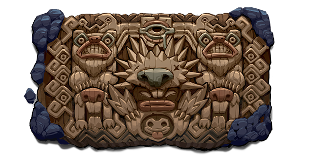 | 주거지 Dwelling |
Spelunky 2 OST - Dwelling - Dwelling Spelunky 2 OST - Dwelling Dark - Flaming Arrow |
이 곳의 공기는 따뜻하며 건조하다. 모닥불 연기와 박쥐의 배설물 냄새가 난다. (The air here is warm and dry. It smells of campfire smoke and bat guano.) |
1-1 ~ 1-4 |
| 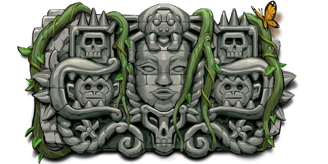 | 정글 Jungle |
Spelunky 2 OST - Jungle - Hidden dangers Spelunky 2 OST - Jungle Dark - Tread lightly |
이 울창한 열대우림은 거친 환경속에서도 생명들로 가득한 것으로 보인다. (Despite all odds, this dense, tropical forest appears to be teeming with life.) |
2-1 ~ 2-4 |
| 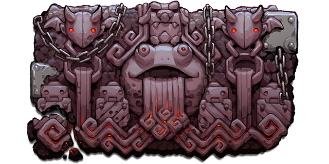 | 화산 Volcana |
Spelunky 2 OST - Volcana - Molten Factory Spelunky 2 OST - Volcana Dark - Scorched grotto |
용암으로 가득 찬 이 지역은 지옥과도 같이 뜨겁다! 달 속에 이런 데가 있을 수 있다는걸 누가 알았을까? (It's as hot as Hell in this lava-filled world! Who knew the Moon could have such a place inside it?) |
2-1 ~ 2-4 |
| 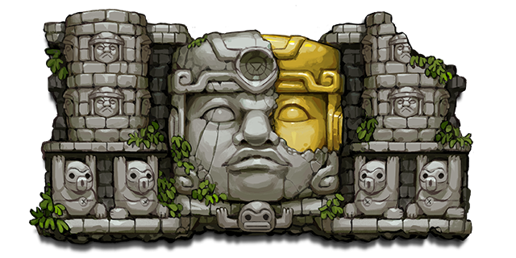 | 올멕의 동굴 (Olmec's Lair) |
Spelunky 2 OST - Olmecs Lair - Old Timer | 강력한 올멕을 모시는 신전. 이 숭배의 전당에는 시간을 뛰어넘는 가치가 있다. (A shrine dedicated to the mighty Olmec. There is a timeless quality to this place of worship.) |
3-1 |
| 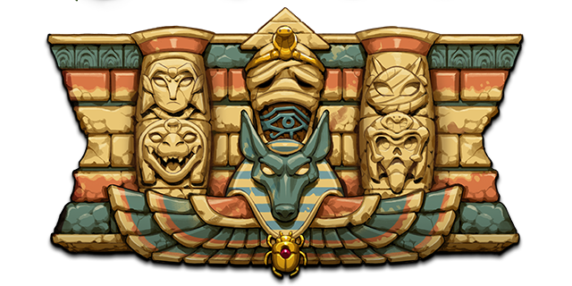 | 아누비스 신전 Temple of Anubis |
Spelunky 2 OST - Temple of Anubis - The great tomb Spelunky 2 OST - Temple of Anubis Dark - Sarcophagus |
위대한 파라오들이 지은 거대한 무덤이다. 과거, 현재, 그리고 미래의 이야기가 이 곳의 벽에 새겨져 있다. (A massive tomb built by powerful pharaohs. On its walls are carved the stories of the past, present, and future.) |
4-1 ~ 4-4 |
| 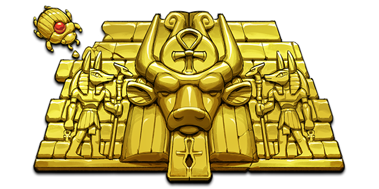 | 황금 도시 The City of Gold |
Spelunky 2 OST - City of Gold - Opulence | 모든 보물 사냥꾼들의 전설적인 장소이다! 벽돌이 전부 단단한 황금으로 만들어져 있다 (A legendary place to all treasure hunters! Every brick is made from solid gold.) |
4-3 |
| 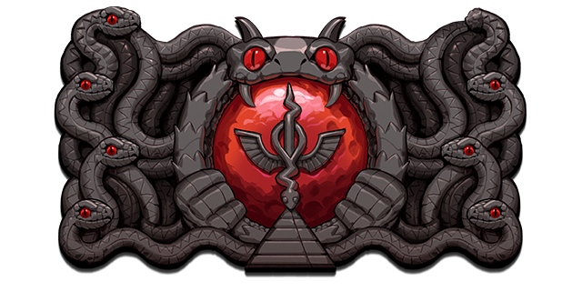 | 두아트 Duat |
Spelunky 2 OST - Duat - Beyond death | 영원한 핏빛 달 아래에서 타오르고 있는 재와 불의 사막이다. 이집트 신 오시리스의 영역이기도 하다. A desert of ash and fire, burning beneath an eternal blood moon. The domain of the god Osiris. |
4-4 |
| 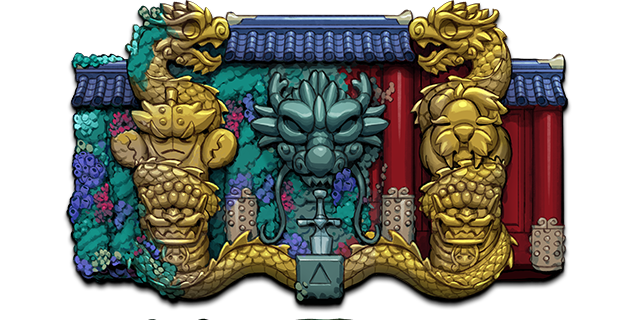 | 조수 웅덩이 Tide Pool |
Spelunky 2 OST - Tide Pools - Still Waters Spelunky 2 OST - Tide Pool Dark - Marrow |
이 폐허가 되어버린 고대 왕국은 광활한 바닷속의 끝에 잠들어 있다. The ruins of an ancient empire lay here, at the edge of a vast, underground ocean. |
4-1 ~ 4-4 |
| 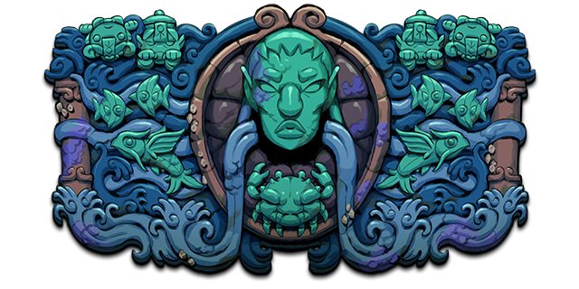 | 태고의 바다 Abzu |
Spelunky 2 OST - Abzu - Cracked Shell | 이 성스러운 궁전은 바다의 가장 깊은 곳에 지어져 있다. This palatial sanctuary was built over the deepest part of the sea. |
4-4 |
| 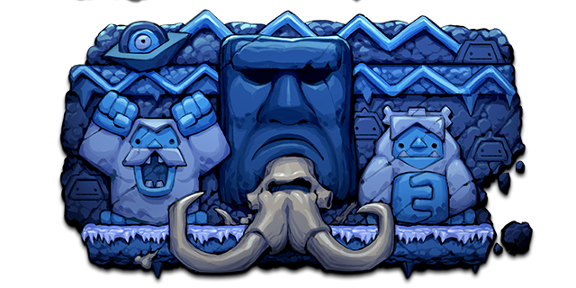 | 얼음 동굴 Ice Caves |
Spelunky 2 OST - Ice Caves - Frozen core | 거대한 운석의 얼어붙은 중심부 안에서도 생명은 여전히 번창하고 있다. Life still thrives within the frozen core of this giant meteorite. |
5-1 |
| 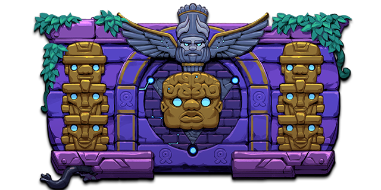 | 신 바빌론 Neo Babylon |
Spelunky 2 OST - Neo Babylon - City of the future Spelunky 2 OST - Neo Babylon Dark - Not in OST |
첨단 기술과 말할수 없는 경이로움, 그리고 끝없는 자극으로 이루어진 올마이트들의 수도이다. The capital city of the Olmites, a place of high technology, untold wonders, and endless stimulation. |
6-1 ~ 6-3 |
| 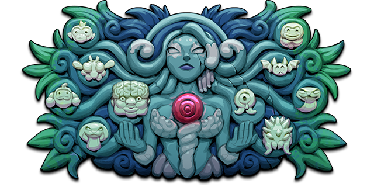 | 티아마트의 옥좌 Tiamat's Throne |
Spelunky 2 OST - Tiamats Throne - Mother | 여왕 티아마트가 세계를 창조해 낸 곳이다. 지금은 티아마트가 그녀의 제멋대로인 자손들을 통치하는 권좌가 되었다. Where Queen Tiamat gave birth to the World. Now a seat of power from which she guides her unruly children. |
6-4 |
| 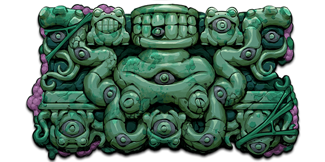 | 가라앉은 도시 Sunken City |
Spelunky 2 OST - Sunken City - Bottom of the well Spelunky 2 OST - Sunken City Dark - 1000 eyes |
우물의 밑 바닥에 잠들어있는 태초의 도시이다. In the bottom of the Well, the First City sleeps. |
7-1 ~ 7-3 |
| 가지 세계 Eggplant World |
Spelunky 2 OST - Eggplant World - The Kings theme | 한때는 강력한 폭군의 궁전이었으나, 지금은 평화로운 가지들만이 무성하게 자라고 있다. Once the palace of a mighty tyrant, now overgrown with peaceful eggplants. |
7-2 | |
| 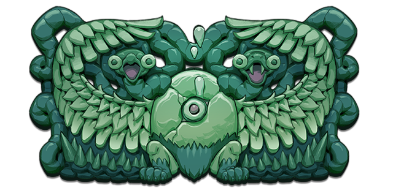 | 혼돈의 은신처 Hundun's Hideaway |
Spelunky 2 OST - Hunduns Hideaway - Child | 우물의 가장 낮은 곳에서, 항상 느껴왔지만 전혀 알려지지 않았던 위대한 몽상가가 혼란을 초래하고 있다. At the lowest point of the Well is where the Great Dreamer muddles about, always felt but never known. |
7-4 |
 |
우주의 바다 Cosmic Ocean |
Spelunky 2 OST - Cosmic Ocean - Ripple | 혼돈의 아이같은 울음에서 흘러넘치는 창조의 바다. 이곳에서 시작과 끝을 알아낼 수 있을지도 모른다. The roiling waters of creation that flow from Hundun's childish weeping. Here one may find the beginning and the end. |
7-5 ~ 7-99 |